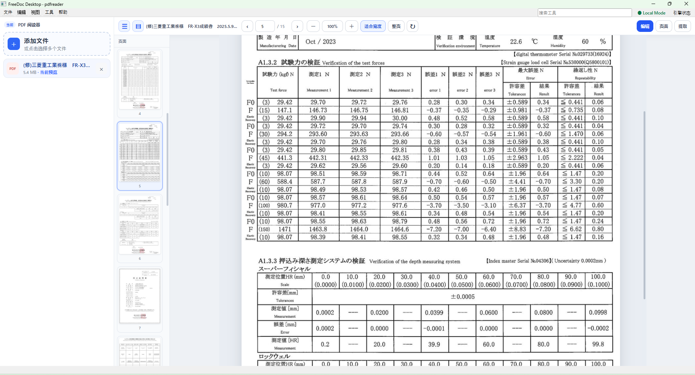
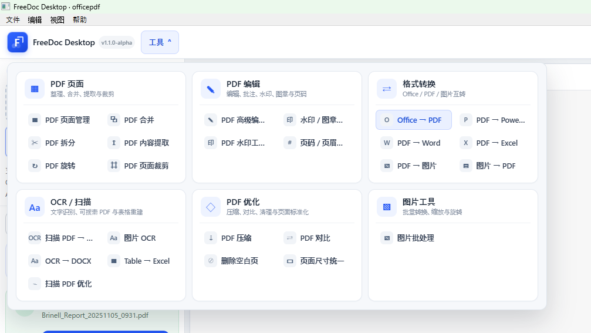
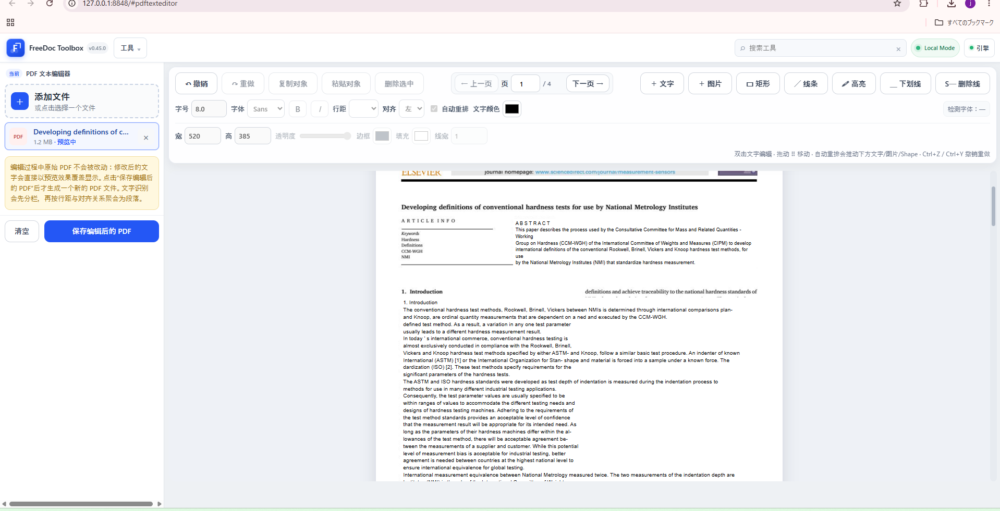

Free · Local · Private
你的 PDF 与 Office，留在电脑里处理。
FreeDoc Desktop 是面向 Windows 的本地文档工作台。阅读、编辑、合并、OCR、转换、水印与页面管理，全部集中在一个桌面软件中。
Windows 10 / 11 · 64-bit · 无账号 · 无上传 · 可离线使用

100% Local文件不上传云端
无需账号安装后直接使用。
本地处理文档留在你的电脑。
离线可用核心功能不依赖云端。
中 · 日 · 英面向多语言文档工作流。
All-in-one workflow
不是单一转换器，而是完整文档工作台。
FreeDoc 把日常最常用的 PDF、Office、OCR 与图片工具统一到一个本地桌面界面。
▤
PDF 阅读器
多文件阅读、缩略图、连续滚动、搜索、缩放与阅读位置记忆。
✎
PDF 编辑
文字、图片、形状与批注工具，持续向原生 PDF 内容流编辑推进。
▦
页面管理
拖动排序、删除、旋转、提取、裁剪与页面尺寸统一。
Aa
OCR / 扫描
中文、日文、英文 OCR，扫描 PDF 可搜索化与扫描优化。
⇄
格式转换
PDF、Word、Excel、PowerPoint 与图片之间的本地转换。
印
水印与图章
文字水印、图片水印、图章、页码、页眉页脚与批处理。

Simple by design
常用工具清楚，工作区尽量留给文档。
✓工具按 PDF 页面、编辑、转换、OCR、优化与图片分类。
✓阅读中的 PDF 可直接带入编辑、页面管理与提取，不重复选文件。
✓桌面版优先使用本地 Python / PDFium / Office 引擎。
Advanced editing
从阅读直接进入编辑。
FreeDoc 正在持续完善 Native PDF Canvas、glyph-level hit test 与文本编辑控制器，让文字、图片和批注更接近原始 PDF 对象。

Privacy first
文件不需要离开你的电脑。
FreeDoc Desktop 的核心处理发生在本机。官网只用于介绍、下载和更新，不要求把私人 PDF 上传到服务器。
No Upload本地处理文档
No Account无需注册账号
Offline核心工具可离线
Local EnginePDF / Office / OCR